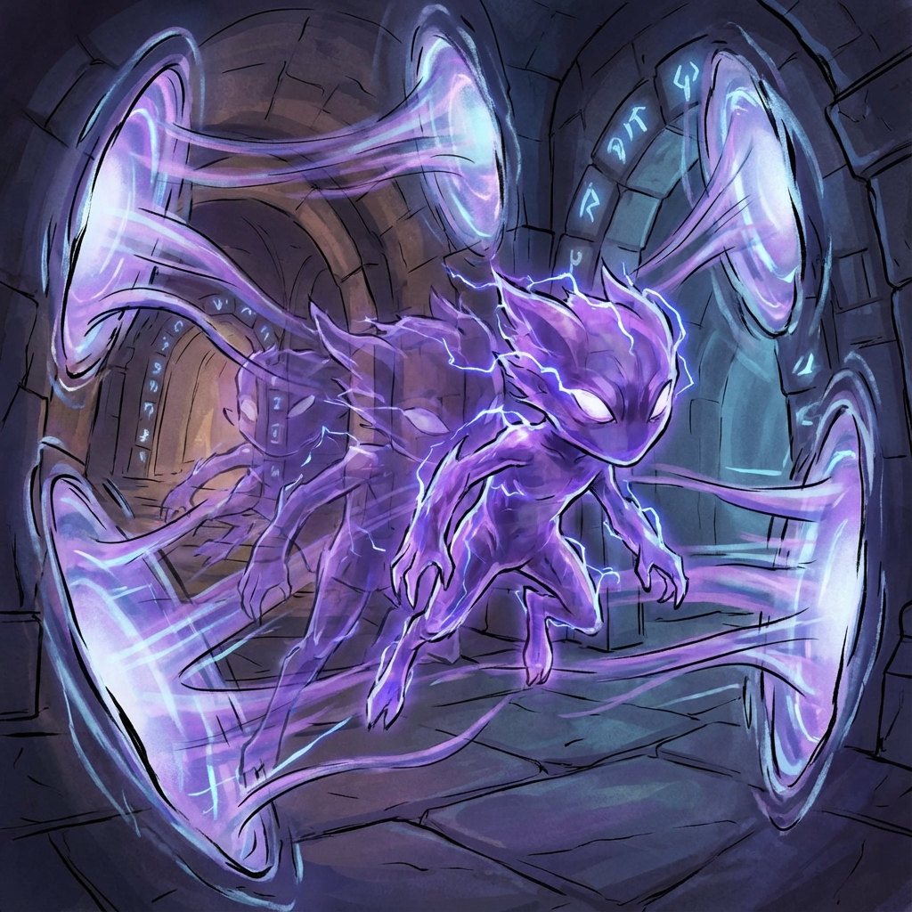

Blink Mephit
Displacement Essence Elemental
Type: Small Elemental (Neutral)
CR: 1/2 (100 XP)
Description
A nearly invisible creature whose edges flicker like a mirage. Each flap of its wings leaves a shimmering afterimage, and its footsteps echo from unexpected directions. These mephits emerge from disrupted Displacement Essence, haunting courier tunnels and teleportation passages.
Stat Block
Armor Class: 13
Hit Points: 18 (4d6+4)
Speed: 30 ft., fly 40 ft.
STR6 (-2)
DEX16 (+3)
CON12 (+1)
INT7 (-2)
WIS10 (+0)
CHA8 (-1)
**Damage Resistances:** Bludgeoning, Piercing, and Slashing from nonmagical attacks
**Condition Immunities:** Poisoned, Grappled
**Senses:** Darkvision 60 ft., passive Perception 10
**Languages:** Auran, Primordial (understands but can't speak)
**Condition Immunities:** Poisoned, Grappled
**Senses:** Darkvision 60 ft., passive Perception 10
**Languages:** Auran, Primordial (understands but can't speak)
Abilities & Actions
Blink Shift (1/Turn): As a bonus action, the mephit can teleport up to 10 ft. to an unoccupied space it can see, without provoking opportunity attacks.
Spatial Shard (Ranged Attack):
The mephit hurls a crystalline fragment of warped space that seems to bend light around it.
*Ranged Weapon Attack:* +5 to hit, range 30/60 ft., one target
*Hit:* 5 (1d6 + 2) force damage
*Special:* The target must succeed on a DC 13 Constitution saving throw or their vision becomes briefly distorted until the end of their next turn, imposing disadvantage on their next attack roll.
Spatial Flicker (Action):
The mephit chooses up to two creatures within 20 ft. Each target must succeed on a Wisdom save (DC 13) or become Disoriented, granting advantage on attack rolls against them until the end of their next turn. Visually, it warps their sense of space, making the environment seem twisted.
Reality Tear (Bonus Action; Recharge 4-6):
The mephit opens a brief rift in space within 30 ft. One ally (including itself) can step through the rift as part of the same bonus action, emerging in another unoccupied space within 10 ft. of the rift. Offensively, it can place an ally behind the party's backline. Defensively, it can aid escape.
Phantom Echo (Reaction):
When a creature moves adjacent to the mephit or provokes an opportunity attack, the mephit may teleport up to 15 ft. away, leaving behind an illusory double for 1 round. The double disappears if attacked (AC 10), potentially wasting an enemy's attack.
Spatial Shard (Ranged Attack):
The mephit hurls a crystalline fragment of warped space that seems to bend light around it.
*Ranged Weapon Attack:* +5 to hit, range 30/60 ft., one target
*Hit:* 5 (1d6 + 2) force damage
*Special:* The target must succeed on a DC 13 Constitution saving throw or their vision becomes briefly distorted until the end of their next turn, imposing disadvantage on their next attack roll.
Spatial Flicker (Action):
The mephit chooses up to two creatures within 20 ft. Each target must succeed on a Wisdom save (DC 13) or become Disoriented, granting advantage on attack rolls against them until the end of their next turn. Visually, it warps their sense of space, making the environment seem twisted.
Reality Tear (Bonus Action; Recharge 4-6):
The mephit opens a brief rift in space within 30 ft. One ally (including itself) can step through the rift as part of the same bonus action, emerging in another unoccupied space within 10 ft. of the rift. Offensively, it can place an ally behind the party's backline. Defensively, it can aid escape.
Phantom Echo (Reaction):
When a creature moves adjacent to the mephit or provokes an opportunity attack, the mephit may teleport up to 15 ft. away, leaving behind an illusory double for 1 round. The double disappears if attacked (AC 10), potentially wasting an enemy's attack.
Combat Tactics
**Trickster & Elusive:** Loves to isolate or confuse a single target, darting around the battlefield.
**Tactical Approach:** Teleports itself or allies into advantageous positions, sowing chaos with illusions and warps. Uses Spatial Flicker to disorient multiple foes, then Reality Tear to reposition.
**Environment:** Found in courier tunnels, teleportation chambers, or areas with disrupted Displacement Essence.
**Tactical Approach:** Teleports itself or allies into advantageous positions, sowing chaos with illusions and warps. Uses Spatial Flicker to disorient multiple foes, then Reality Tear to reposition.
**Environment:** Found in courier tunnels, teleportation chambers, or areas with disrupted Displacement Essence.